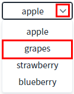
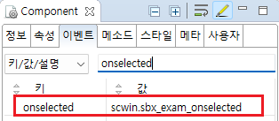

SelectBox의 'onselected' 이벤트를 설정한 예제입니다. 키보드 방향키를 이용해 항목을 선택하거나, 마우스 클릭 또는 스크린 터치를 이용해 항목을 선택했을 때 발생합니다. 로그 확인 영역과 브라우저 개발자 도구의 콘솔에 로그가 출력됩니다.
항목이 선택되었을 때 이벤트 정보 출력하기
1
STEP 1: 컴포넌트의 항목을 선택합니다.
컴포넌트의 '목록 확장' 아이콘을 클릭합니다.
컴포넌트의 항목이 표시됩니다.
표시된 컴포넌트의 항목을 선택(클릭)합니다.
Image 1.브라우저(Chrome) 실행 예시 - 목록 확장 및 선택

2
STEP 2: 실행 결과를 확인합니다.
항목이 선택되면 'onselected' 이벤트의 핸들러에 작성된 스크립트가 실행됩니다.
예제 영역 '로그 확인'과 브라우저의 개발자 도구 콘솔에 핸들러에 전달된 파라미터가 출력됩니다.
Example 1.Log
[15:56:43] scwin.sbx_exam_onselected
[15:56:43] info :
{
"oldValue": "01",
"newValue": "02",
"oldSelectedIndex": 0,
"newSelectedIndex": 1
}
[15:56:43] info.newSelectedIndex : 1
info.newValue : 02
info.oldSelectedIndex : 0
info.oldValue : 011
STEP 1: 'onselected' 이벤트의 핸들러를 설정합니다.
예제 파일에서는 핸들러로 사용할 메소드명을 다음과 같이 정의하였습니다.
onselected : scwin.sbx_exam_onselected
Image 2.웹스퀘어 스튜디오의 Component View - 이벤트 설정 예시

Example 2.Source
<!-- selectbox의 소스 본문 예시 --> <xf:select1 ev:onselected="scwin.sbx_exam_onselected" id="sbx_exam1"> <!-- 중략 --> </xf:select1>
2
STEP 2: 'scwin.sbx_exam_onselected' 메소드를 정의합니다.
Example 3.Script
scwin.sbx_exam_onselected = function(info) { var _newSelectedIndex = info.newSelectedIndex; //선택된 항목의 index var _newValue = info.newValue; //선택된 값 var _oldSelectedIndex = info.oldSelectedIndex; //이전에 선택된 항목의 index var _oldValue = info.oldValue; //이전 값 //console.log("scwin.sbx_exam_onselected >> ", info); //이벤트 확인용 로그 출력 //로직 구성 };
onselected